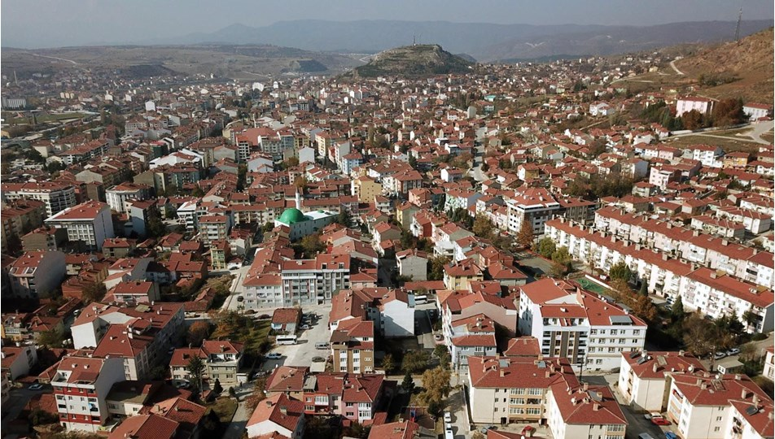
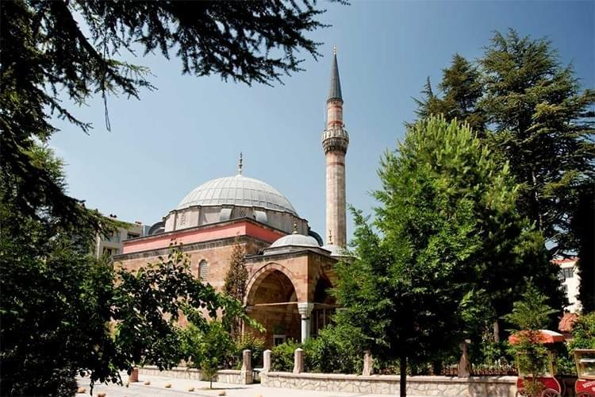
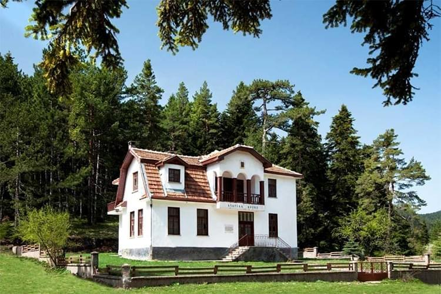
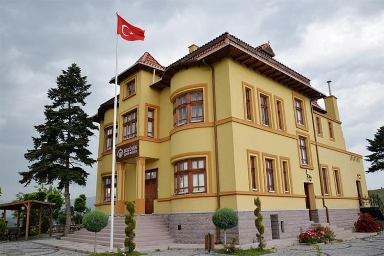
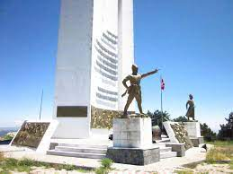
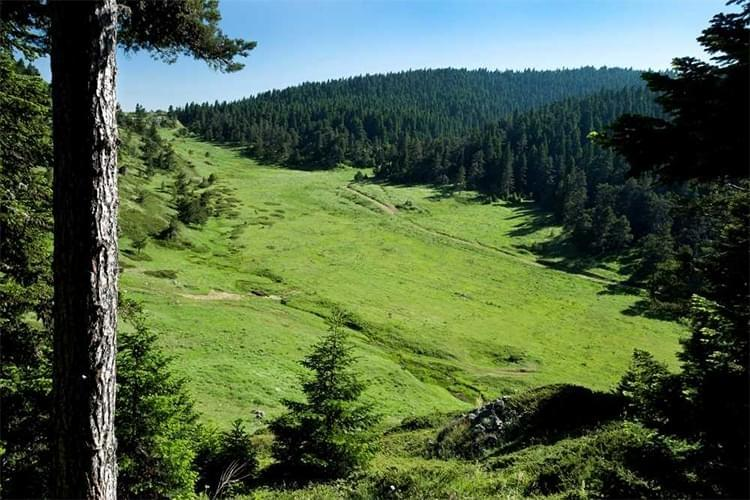
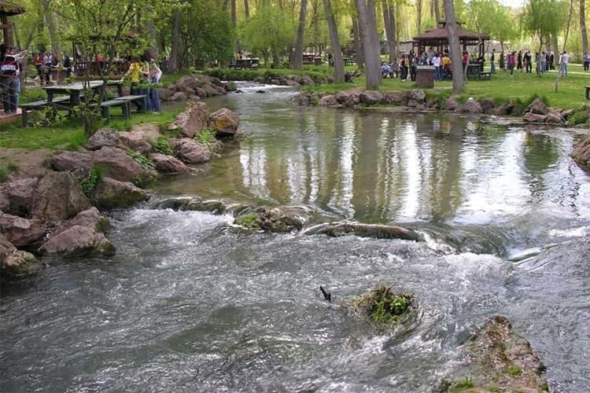

BOZÜYÜK
Bozüyük, Bilecik ilinin bir ilçesidir. İlçe olarak Türkiye'deki bazı illerden büyük olan nadir ilçelerden biridir.
Bu ilçe, Bilecik ilinin ekonomik, sosyal, siyasi kalbi konumundadır.
İlçe adını 1890 yılında İstanbul – Ankara demiryolunun yapımı sırasında keşfedilen Bozüyük Höyüğünden almaktadır.
BOZÜYÜK’ÜN TARİHÇESİ
İlkçağdan itibaren sırasıyla Hititlerin M.Ö. 1200 yıllarından sonra Balkanlardan gelen Frigyalıların bölgeye hakim oldukları antik kalıntılardan anlaşılmaktadır.
Bölgedeki 600 yıllıkFrigya hakimiyetine Kafkaslardan gelen Kimmer’ler son verirler.
Kimmer’lerin bir asır sürenHakimiyeti Lidyalıların gelmesiyle son bulur. Daha sonraki yıllarda Persler,Makedonyalılar, Btinyalıların yaşadığı bu bölge,395 yılından
itibaren Roma hakimiyetine girmiştir.Bizans döneminde Bozüyük’ün adı “Lamunia” olarak bilinmektedir.
660-720 yıllarında bölge Arap-Emevi kuvvetlerinin geçit yeri olmuş,1071 yılından itibaren Bozüyük ve çevresi Türklerin hakimiyetine girmiştir.1289 dan itibaren
Osmanlı hakimiyetine geçen Bozüyük, Selçuklular döneminde Sultanönü uç beyliğinin bir köyü idi.
Osmanlıların ilk dönemlerinde Çayköy,Arıklar,İçköy ve Atkaydı mezra köylerinden oluşan Bozüyük’te ilk birleşme Kanuni’nin komutanı Kasımpaşa’nın kendi adıyla anılan
camii ve külliyeyi yaptırmasıyla meydana gelmiştir. Bu külliyede han,hamam,camii, Sıbyan mektebi bulunmakta olup,külliye 1525-1528 yılları arasında tamamlanmıştır.
Bu dört köy şimdiki Kasımpaşa Mahallesini ve bugünkü Bozüyük’ü oluşturmuşlardır.
BOZÜYÜK'ÜN GÖRÜLMESİ GEREKEN YERLER

- Kasımpaşa Camii:Bozüyük ilçemizde merkezde bulunan cami, ildeki Osmanlı dini mimarisinin en güzel örneklerinden biridir. Külliyenin bir parçası olmasına rağmen cami ile
birlikte imaret de günümüze dek ulaşabilmiştir. Rivayete göre Kanuni’nin Rodos Seferi’nde ordu, caminin olduğu alanda mola vermiş ve bu esnada vezirlerden Kasım Paşa,
seferden zaferle dönülürse burada bir cami yaptırmayı adamış ve cami bu adağa binaen inşa edilmiştir. 1525-1528 tarihleri arasında inşa edilmiş olup tek kubbeli iç mekanı
ve üç kubbeli son cemaat yeri, kesme taş yapısı, ağaç işçiliği ve fildişi kakmaları ile görülmeye değer bir yapıdır.
Caminin mimarının Mimar Sinan olduğuna dair bir inanış varsa da, yapılış tarihi dikkate alındığında mimarın Sinan’dan önce bu görevi yürüten Acem Ali olması daha yakın
bir ihtimaldir.

- Atatürk Köşkü:Bozüyük ilçesinin Camiliyayla Köyü’nde yer alan Atatürk Köşkü, ilçe merkezine yaklaşık olarak 36 km uzaklıktadır. Özel aracınız ile Bursa Eskişehir
Yolu/D200/E90 üzerinden rahat bir şekilde ulaşım sağlayabilirsiniz.Gazi Mustafa Kemal Atatürk’ün Bozüyük ilçesine geldiğinde konaklamak için seçtiği yer olan Atatürk Köşkü,
1930 yılında Albay İbrahim Çolak Bey tarafından yaptırılmıştır. Bulgar mimari özellikleri ile dikkat çeken köşkün çevresi tamamen yeşillikler ile kaplıdır. Özellikle tarih
meraklıların sıklıkla ziyaret ettiği yerler arasındadır.

- Bozüyük Şehir Müzesi:İlçe merkezinde Çarşı Mahallesi’nde yer alan Bozüyük Şehir Müzesi’ne ulaşım son derece kolaydır. Yaklaşık 5 dakikalık yürüme mesafesinde yer alan müzeye
ulaşım için; Hüseyin Kıvrıkoğlu Caddesi’ni ve Sarıtoprak Sokağı’nı kullanabilirsiniz.
İlçenin önemli tarihi yapılarından biri olan Bozüyük Şehir Müzesi, ilçenin köklü tarihi hakkında her türlü bilgiyi detaylı bir şekilde öğrenebileceğiniz bir yerdir.
Albay İbrahim Çolak Bey tarafından inşa ettirilmiş olan yapı, 2013-1014 seneleri arasında restore edilmiş ve ardından müzeye dönüştürülmüştür.
Müzeyi her sene şehir dışından çok sayıda yerli ve yabancı turist ziyaret etmektedir. Müze içerisinde ilçe ve çevresine ait detaylı belgeler, antika eşyalar, fotoğraflar
gibi birçok eseri yakından görebilmeniz mümkündür. Bozüyük gezilecekler listenize mutlaka eklemeniz gereken yerler arasındadır.

- Metris Tepe Zafer Anıtı:Bozüyük ilçesinin Metristepe Köyü’nde yer alan Metristepe Zafer Anıtı, ilçe merkezine yaklaşık olarak 15 km uzaklıktadır. Ulaşım için;
İsmet İnönü Caddesi/D650 kara yolunu kullanabilirsiniz.
Tarihi açıdan büyük bir öneme sahip olan Metristepe Zafer Anıtı, 1975 yılında inşa edilmiştir. İnönü Savaşı’nda şehit olanların anısına yaptırılan anıtın yüksekliği
ortalama 25 m’dir. Betonarme malzemeler kullanılarak yapılan anıt, ilçenin önemli tarihi yapıları arasında yer almaktadır. Anıtın üzerinde şehitler ile ilgili birtakım
yazılar yazılıdır.

- Kömürsu Yaylası:İlçe merkezine yaklaşık olarak 30 km uzaklıkta yer alan Kömürsu Yaylası, Camiyayla Köyü’ne yakın bir konumdadır. Özel aracınız ile Bursa Eskişehir Yolu/D200/E90
üzerinden ulaşım mümkündür.Ormanlık alanları ile dikkat çeken Kömürsu Yaylası, yaz aylarında gelen misafirlerine harika doğal güzellikler sunmaktadır. Yayla turizmi açısından
büyük bir öneme sahip olan bölgede köknar, kayın, çam gibi birçok farklı ağaç türünü görebilmeniz mümkündür. Ağaç türlerinin dışında birbirinden renkli çiçeklere de ev sahipliği
yapmaktadır.
Doğa ile iç içe yeşillikler içerisinde sevdikleriniz ile birlikte sakin saatler geçirebilir, piknik yapabilir ve çevredeki tüm doğal güzellikleri yakından keşfedebilirsiniz.
Doğa yürüyüşleri için de sıklıkla tercih edilen bölge, daha çok yaz aylarında ziyaret edilmektedir. Bozüyük gezilecekler listenize eklemeniz gereken yerlerdendir.

- Türbin Mesire Alanı:Bozüyük ilçesine bağlı Saraycık Köyü’nde yer alan Türbin Mesire Yeri, ilçe merkezine yaklaşık olarak 8 km uzaklıktadır.
Ulaşım için; Kütahya Bozüyük Yolu’nu kullanabilirsiniz.Piknik yapmak için oldukça elverişli olan bölgede aileniz veya arkadaşlarınız ile birlikte keyifli bir piknik yapabilirsiniz.
Çocuklu aileler için de oldukça uygun olan bölgede, çocukların eğlenceli vakitler geçirebilecekleri oyun parkları mevcuttur. Bozüyük gezilecekler listenize mutlaka eklemeniz gereken
yerler arasındadır.
Bozüyük'ün Ekonomik Kaynağı
Büyük ölçüde sanayide dayanan ilçe ekonomisi içerisinde tarım ve hayvancılık ve tarımda dayalı sanayinin de yeri vardır. Bozüyük'te ETİ, CP, Bozalan Yumurta, Liman Entegre Balıkçılık
gibi önemli bazı tarıma dayalı sanayi kuruluşları bulunmaktadır.